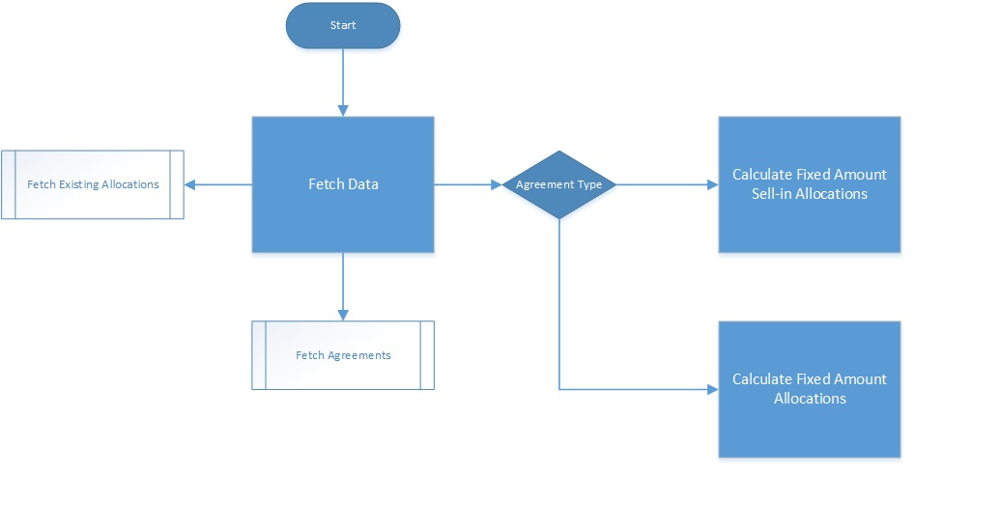
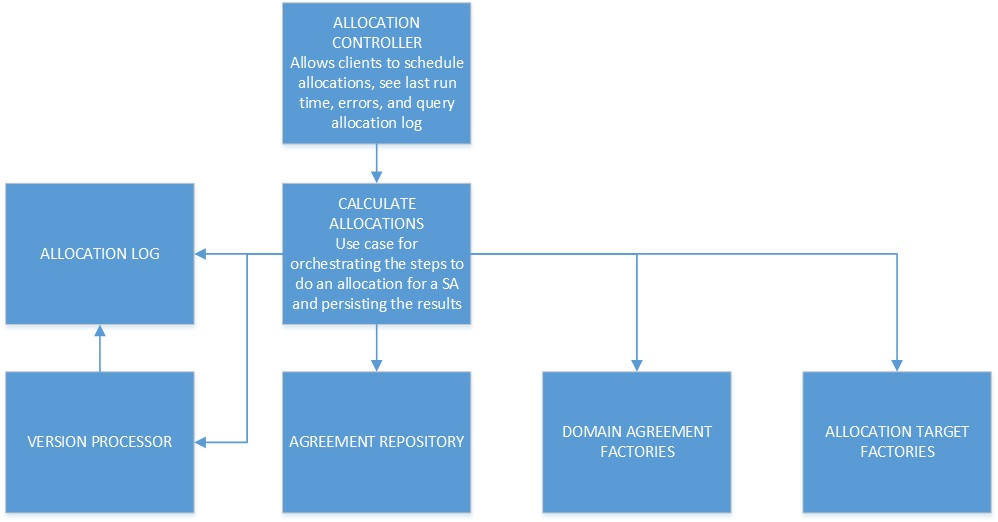
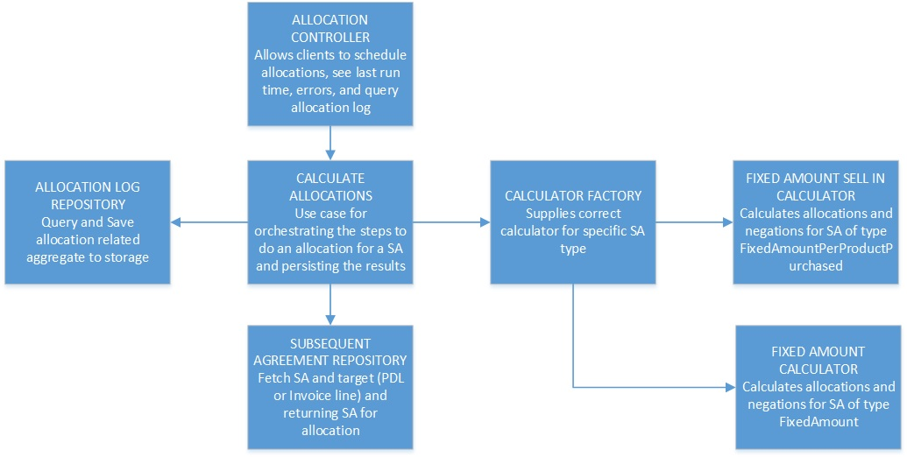

When modeling software we often focus on modeling state. What if instead we modeled functionality through time? This way we can more closely match our structural model to our behavioral model. I believe this increases the ease of maintaining a system, for to change a system you must first understand it.
In this post I want to explore the way we think about, document, and design systems; taking a brief tour through history on this topic and pose a question about whether we are doing it in a way that makes sense. This question brings up something I have started calling the functional-structural impedance mismatch. I will go through some experiences trying to minimize this mismatch and hopefully convince you to try it yourself.
A quick look at history
In the 1950s well defined function model diagrams started being used in systems engineering, evolving from business process diagrams developed and used in the previous century. In the 1960s these were used by NASA to visualize the time sequence of space missions, and from there they developed into various usages in software development. See the resources at the end if you are interested in the details of this progression but I will move forward quickly here. By the 1990s object-oriented programming started gathering more widespread popularity, exploding when Java arrived on the scene. With it grew the popularity of UML and in particular the structural diagrams that describe how we build our OO systems. I remember many weeks drawing both behavioral and structural diagrams for my university projects in the early 90s and since then class diagrams have served as the staple for most diagrams I see for how software is built.
Why is this important? I think it is influential in why almost any diagram on how to build, or how a system is built, is a structural diagram describing state. The type of diagram is not a problem in and of itself. Diagramming the structure of an application is important. I myself am a big fan of the low ceremony, high contextual information of Simon Brown's C4 model. State with behavior is how OOP developers think about software, and so is how we document.
Describing behavior
Regardless of what discipline you come from, most people can gain a fair amount of information from a well drawn flow chart. Flow charts are pretty great behavioral diagrams that tell you how a system accomplishes something, regardless of whether that system is physical or digital. What is great about these kinds of diagrams is that they give you an indication of how a system accomplishes something through time. They are very intuitive for us to understand how a system behaves. And if you think about it, understanding how a system behaves (or should behave) is one of the most important things we as developers need to know to maintain and enhance a software system.

Above is an excerpt from a simple flow chart describing the process of calculating the value of an agreement based on sales depending on the type of the agreement.
A state based structure
So let us take a look at what this flow diagram typically translates to when built by object-oriented programmers that are accustomed to modeling state.
  I think the resulting structure of the important classes are quite standard. I also do not think that it is crystal clear how and where each component relates to the process. It is not too hard to guess because this has been simplified and this is a pretty small system. When digging into this system though is was already difficult to reason about where what is done.This is a simplified diagram of a real application I worked on. This is by no means me shitting on how something was built. There are always opportunities to learn how to improve things. This one was unique as we took the time to refactor it (as we will see in a bit).
A functional structure
So the team agreed that we need to try improve the structure of the existing code. Over the next couple weeks the system was refactored structurally to look like this:
 As you can see, visually this is far more in line with the functional flow diagram. This really did improve the team's ability to reason about the code, especially for new team members joining after development had progressed quite far.Discussion
Here is what some of the new joiners to the team had to say about the refactored code:
...my first impression looking at the code was that it had a flow that I could easily follow without having to know the state of objects. I could figure out, looking at the code, that one function result led to another function in a particular flow until you reach an end result... - Bruno Lamarao
When I just joined the team we did some mob programming on the project. Being able to sit down without having opened the project before and start adding features, just shows that the behavior/flow of the program was very easy to reason about. - Thomas Bouman
This stood out to me. It is not often I had that feeling about code and it was not something I heard often from other developers. It confirmed the suspicion I had that this may be a better way of modeling software. I am wary of silver bullets so it is possible that some systems are just better as a pure state based model. A very simple CRUD based application probably falls into this camp. As soon as we have more complex functionality though, I think it is worth modeling it to match our mental model of how it functions.
Why do I think this is better?
A single model
As I have already mentioned, the functional model now matches the structural model. The importance of this cannot be overstated. To know the structure of the software you only need to know what it does functionally and vice versa, to look at the structure is to look at what the system functionally does.
Entry point tells a story
I mentioned this in my tips for managing code complexity but having an entry point into your code that describes the functioning of a feature is a giant win. Each step should be at the same abstraction level, giving developers a great way to understand where they need to dive into the code to make changes.

Solving the trouble with Liskov Substitution Principle
Good abstractions are hard to discover and even harder to maintain. As a system evolves, a previously good abstraction can start to become awkward. When you have a model that is used liberally throughout an application, a good abstraction is almost impossible to discover.

And here in lies the key. By constraining a model to be used within a certain application flow, or even within a step in that flow, we limit the dependencies on it. Where before we had a model that is monolithic and used throughout the software application, now we constrain our model and any resulting abstractions to only servicing a single step in our feature flow.

This means we only need to concern ourselves with a model that satisfies a small subsection of the functionality instead of all functionality within an application. This is far, far easier to reason about.
WARNING: This does some with one overhead. Class explosion! In a high ceremony language like C# or Java, this can be quite a high initial cost indeed. I do recommend not optimizing for the initial extra cost of creating a few more files.
Conclusion
So far I have avoided talking about functional programming. The functional used in this article is with regard to behavior rather than functions in the usual FP sense. They are indeed related though as this style of designing applications is what you naturally tend toward following an FP approach. I avoided mentioning FP till this point though because I think that an OO paradigm programmer can benefit from applying this style of design without buying into FP. Who knows? It may be your gateway drug :)
In future articles I hope to demonstrate some more practical examples of developing applications this way, so keep a lookout for those ([follow on Twitter)(https://twitter.com/DevonBurriss)).
In the meantime if you are interested I suggest you check out Scott Wlaschin's excellent book Domain modeling made functional where he demonstrates a lot of these concepts in a FP way with F#.
What do you think? Are you already writing your applications this way? Will you try it? Does functional-structural impedance mismatch as an idea make sense?
Resources
Credit
- Social image by Sharon Pittaway
- Refactoring marathon Duncan Roosma